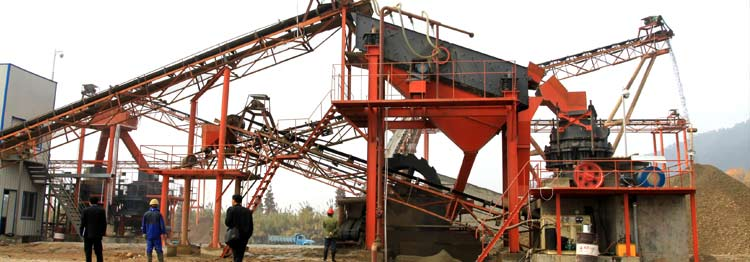
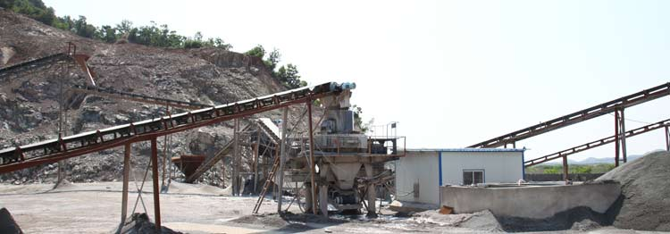
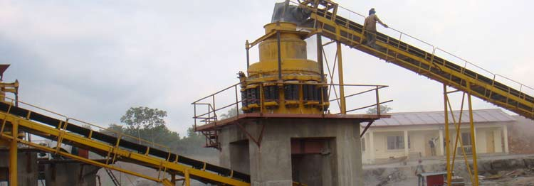
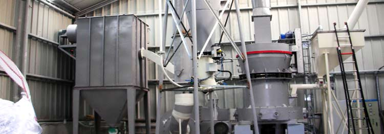

Taconite Ore Grinding Plant
-

Jaw Crusher Price List
Jaw Crusher Price List, Wholesale Various High Quality Jaw Crusher Price List Products from Global Jaw Crusher Price List Suppliers and Jaw Crusher Price List Factory ...jaw crusher price list : By analysing customer's requirements and absorbing the world-class advanced technology, Zenith developed the HJ series jaw crusher.laboratory jaw crusher price and laboratory jaw crusher price manufacturers - 44 laboratory jaw crusher price wholesalers & Suppliers from China.
View more details > - 
Jaw Crusher Second Used
Used Jaw Crusher For Sale, Buy Various High Quality Used Jaw Crusher For Sale Products from Global Used Jaw Crusher For Sale Suppliers and Used Jaw Crusher For …Used jaw crushers and plants for sale, including , , Kue Ken, , Pioneer, Cedarapids, Universal, and Lippmann Grizzly King jaw crushers.Used jaw crushers for sale, and using a jaw crusher to mine, quarry, and produce aggregate. Trituradoras de quijada usados a la venta.
View more details > - 
Jaw Crusher Spare Parts
Jaw Crusher Spare Parts, Wholesale Various High Quality Jaw Crusher Spare Parts Products from Global Jaw Crusher Spare Parts Suppliers and Jaw Crusher Spare Parts ...jaw crusher spare parts and jaw crusher spare parts manufacturers - 2460 jaw crusher spare parts wholesalers & Suppliers from China.We produce spare parts for jaw crusher, cone crusher, impact crusher, heavy type hammer crusher, ball mill, raymond series mill, etc. We also do business of screen ...
View more details > - 
Jaw Crusher Toggle Plate
Jaw Crusher Toggle Plate, Wholesale Various High Quality Jaw Crusher Toggle Plate Products from Global Jaw Crusher Toggle Plate Suppliers and Jaw Crusher Toggle Plate ...China Jaw Crusher Toggle Plate, Find details about China Jaw Plate, Crusher from Jaw Crusher Toggle Plate - Yongkang Jinpan Industry & Trade Co., Ltd.MIC - Made-in ...Jaw Crusher Toggle Plate. Jaw Crusher Toggle Plates are designed to shear protecting crusher components if noncrushable object is introduced to crusher.
View more details > - 
Jaw Crusher Working Principle
Jaw Crusher Introduction. Jaw Crushers are configured for primary crushing of even hardest rock. Our Jaw Crushers are crushing without rubbing Minimum ...The working principle of jaw crusher would help you to understand the machine much better, and the way to maintain the machine would help you to enjoy the benefit of ... The unique working principle of cone crusher enables it to be useful for primary crushing, secondary crushing and final crushing as well.
View more details >